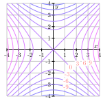

The partial derivatives \(f_x\) (and \(f_y\text{,}\)\(f_z\text{,}\)\(f_{x_i}\text{,}\) etc) answer the question, "What is the rate of change of \(f\) in the positive \(x\) (and \(y\text{,}\)\(z\text{,}\)\(x_i\text{,}\) etc) direction?" In this section, we will see an efficient way to answer this question for any direction in the domain.
We start by fixing a point \((x_0, y_0)\) in the domain of \(f\) and a direction, i.e. a unit vector \(\vu = \lrangle{u_1, u_2}\text{.}\) Then
is a line (parameterized by arc length) that passes through \((x_0, y_0)\) at time \(t = 0\) in the direction of \(\vu\text{.}\)
The composition \(f(\vr(t))\) is a function \(\R \to \R\text{.}\) Its derivative at \(t = 0\) will be the rate of change of \(f\) we are looking for. Moreover, the chain gives
as the form of the derivative. Lastly, we note that \(dx/dt = u_1\) and \(dy/dt = u_2\text{.}\) This expression gives the directional derivative of \(f\) at \((x_0, y_0)\) in the direction of \(\vu\)
Calculating a directional derivative.
Given a differentiable function \(f = f(x,y)\) and a unit vector \(\vu = \langle u_1, u_2 \rangle\text{,}\) we may compute \(D_{\vu}f(x,y)\) by
Use Equation (2.4.1) to determine \(D_{\vi} f(x,y)\) and \(D_{\vj} f(x,y)\text{.}\) What familiar function is \(D_{\vi} f\text{?}\) What familiar function is \(D_{\vj} f\text{?}\) (Recall that \(\vi\) is the unit vector in the positive \(x\)-direction and \(\vj\) is the unit vector in the positive \(y\)-direction.)
Use Equation (2.4.1) to find the derivative of \(f\) in the direction of the vector \(\vv = \langle 2, 3 \rangle\) at the point \((1,-1)\text{.}\) Remember that a unit direction vector is needed.
The vector whose components are the values of the partial derivatives of \(f\) is called the gradient of \(f\text{.}\) It is denoted by
Let’s consider the function \(f\) defined by \(f(x,y) = x^2 - y^2\text{.}\) Some contours for this function are shown in Figure 2.4.1.

Figure2.4.1.Contours of \(f(x,y) = x^2 - y^2\text{.}\)
Find the gradient \(\nabla f (x,y)\text{.}\)
For each of the following points \((x_0,y_0)\text{,}\) evaluate the gradient \(\nabla f(x_0,y_0)\) and sketch the gradient vector with its tail at \((x_0,y_0)\text{.}\) Some of the vectors are too long to fit onto the plot, but we’d like to draw them to scale; to do so, scale each vector by a factor of 1/4.
\(\displaystyle (x_0,y_0) = (2,0)\)
\(\displaystyle (x_0,y_0) = (0,2)\)
\(\displaystyle (x_0,y_0) = (2,2)\)
\(\displaystyle (x_0,y_0) = (2,1)\)
\(\displaystyle (x_0,y_0) = (-3,2)\)
\(\displaystyle (x_0,y_0) = (-2,-4)\)
\(\displaystyle (x_0,y_0) = (0,0)\)
What do you notice about the relationship between the gradient at \((x_0,y_0)\) and the contour passing through that point?
Does \(f\) increase or decrease in the direction of \(\nabla
f(x_0,y_0)\text{?}\) Provide a justification for your response.
Using the geometric definition of the dot product gives a lot of information about the rate of change of \(f\) at \((x_0, y_0)\text{.}\)
Figure2.4.2.The sign of \(D_{\vu} f(x_0,y_0)\) is determined by \(\theta\text{.}\)
Activity2.4.3.
In this activity we investigate how the gradient is related to the directions of greatest increase and decrease of a function. Let \(f\) be a differentiable function and \(\vu\) a unit vector.
Let \(\theta\) be the angle between \(\nabla f(x_0,y_0)\) and \(\vu\text{.}\) Use the relationship between the dot product and the angle between two vectors to explain why
At the point \((x_0,y_0)\text{,}\) the only quantity in Equation (2.4.3) that can change is \(\theta\) (which determines the direction \(\vu\) of travel). Explain why \(\theta = 0\) makes the quantity
When \(\theta = 0\text{,}\) in what direction does the unit vector \(\vu\) point relative to \(\nabla f(x_0,y_0)\text{?}\) Why? What does this tell us about the direction of greatest increase of \(f\) at the point \((x_0,y_0)\text{?}\)
In what direction, relative to \(\nabla f(x_0,y_0)\text{,}\) does \(f\) decrease most rapidly at the point \((x_0,y_0)\text{?}\)
State the unit vectors \(\vu\) and \(\vv\) (in terms of \(\nabla f(x_0,y_0)\)) that provide the directions of greatest increase and decrease for the function \(f\) at the point \((x_0,y_0)\text{.}\) What important assumption must we make regarding \(\nabla f(x_0,y_0)\) in order for these vectors to exist?
Activity2.4.4.
Consider the function \(f\) defined by \(f(x,y) = -x + 2xy - y\text{.}\)
Find the gradient \(\nabla f(1,2)\) and sketch it on Figure 2.4.3. Figure2.4.3.A plot for the gradient \(\nabla f(1,2)\text{.}\)
Sketch the unit vector \(\vz = \left\langle-\frac1{\sqrt{2}},
-\frac1{\sqrt{2}}\right\rangle\) on Figure 2.4.3 with its tail at \((1,2)\text{.}\) Now find the directional derivative \(D_{\vz}f(1,2)\text{.}\)
What is the slope of the graph of \(f\) in the direction \(\vz\text{?}\) What does the sign of the directional derivative tell you?
Consider the vector \(\vv = \langle 2,-1\rangle\) and sketch \(\vv\) on Figure 2.4.3 with its tail at \((1,2)\text{.}\) Find a unit vector \(\vw\) pointing in the same direction of \(\vv\text{.}\) Without computing \(D_{\vw}f(1,2)\text{,}\) what do you know about the sign of this directional derivative? Now verify your observation by computing \(D_{\vw}f(1,2)\text{.}\)
In which direction (that is, for what unit vector \(\vu\)) is \(D_{\vu}f(1,2)\) the greatest? What is the slope of the graph in this direction?
Corresponding, in which direction is \(D_{\vu}f(1,2)\) least? What is the slope of the graph in this direction?
Sketch two unit vectors \(\vu\) for which \(D_{\vu}f(1,2) = 0\) and then find component representations of these vectors.
Suppose you are standing at the point \((3,3)\text{.}\) In which direction should you move to cause \(f\) to increase as rapidly as possible? At what rate does \(f\) increase in this direction?
Here is a list of important facts to know abou the gradient or a function \(f\text{:}\)
The gradient is a vector in the domain of \(f\text{.}\)
When it’s not zero, \(\nabla f(x_0,y_0)\) points in the direction of greatest increase at \((x_0,y_0)\text{,}\) and \(|\nabla f(x_0,y_0)|\) is the instantaneous rate of change of \(f\) in that direction.
When it’s not zero, \(\nabla f(x_0,y_0)\) is orthogonal to the contour through \((x_0,y_0)\text{.}\)
The gradient is our first example of a vector field, i.e. a function that assigns to each point in the domain a vector.
Activity2.4.5.
The temperature at a point \((x,y,z)\) is given by
where \(T\) is measured in degrees Celsius and \(x\text{,}\)\(y\text{,}\) and \(z\) are measured in meters.
(a)
In which direction (given as a unit vector) does the temperature increase most rapidly at the point \((-1,1,1)\text{?}\)
(b)
A thermometer is placed at the point \((-1,1,1)\) and starts moving toward the point \((3, -3, 5)\text{.}\) What is the rate of change of the temperature that the thermometer reads?
Just as the gradient of a function of two variables is orthogonal to the level curves of the function, the gradient of a function of three variables is orthogonal to the level surfaces of the function. This gives a quick way to find the equations of tangent lines to curves and tangent planes to surfaces.
Activity2.4.6.
The circle \(x^2 + y^2 = 4\) is not the graph of any function. Thinking of \(y\) as a function of \(x\) is not helpful to find the tangent lines at \((\pm 2, 0)\text{.}\) However, we can think if the this circle as the level set of a function of two variables.
(a)
The circle \(x^2 + y^2 = 4\) is not a level curve (contour) of which of the following functions?
\(\displaystyle f(x,y) = x^2 + y^2 - 4\)
\(\displaystyle f(x, y) = 42 - x^2 - y^2\)
\(\displaystyle f(x, y) = x^2 - y^2\)
\(\displaystyle f(x, y) = x^2 + y^2\)
(b)
Choose any function for which the circle is a level set, find \(\nabla f(2,0)\) for that function, and use it to find the equation of the line tangent to the circle at \((2,0)\text{.}\)
Activity2.4.7.
The surface \(y = \frac{3}{2} x^2 + \frac{3}{2} z^2 - 5\) is an elliptic paraboloid. (It opens in the positive \(y\)-direction.)
(a)
Find a function \(f(x,y,z)\) for which this surface is a level set.
(b)
Compute the gradient of your function \(\nabla f(x,y,z)\text{.}\)
(c)
Use the fact that the gradient is orthogonal to the level sets to find an equation of the tangent plane to the surface at the point \((1,-2,1)\text{.}\)